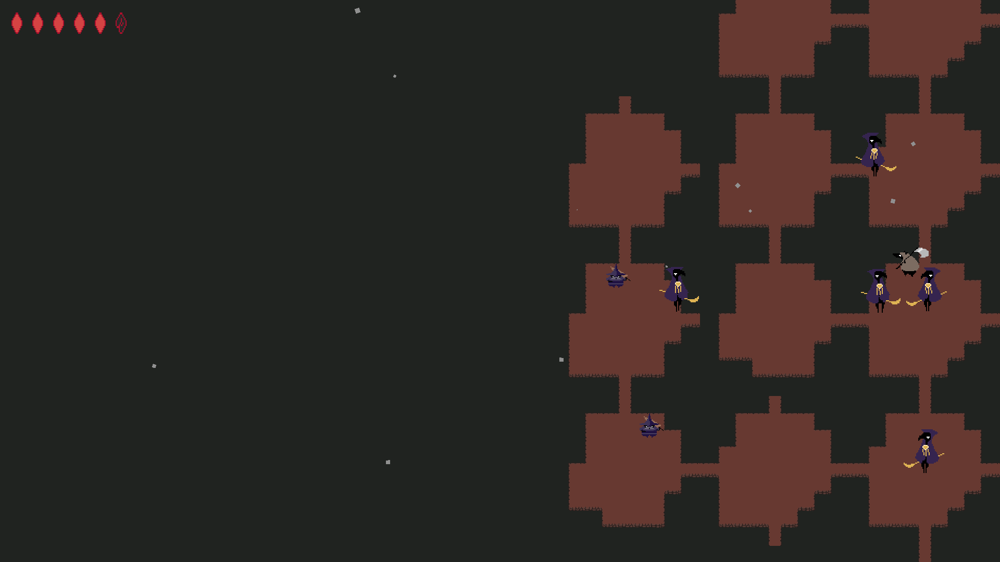
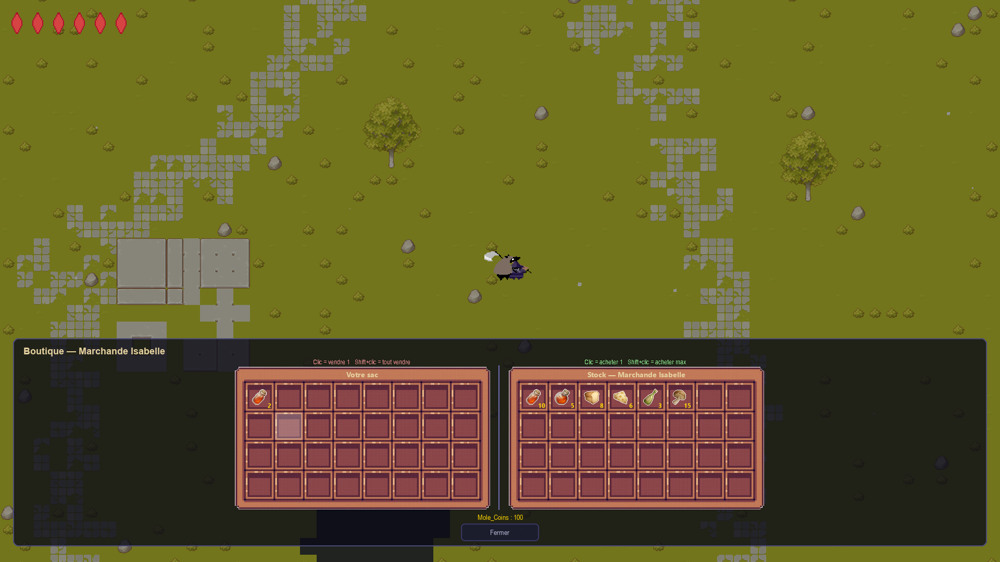
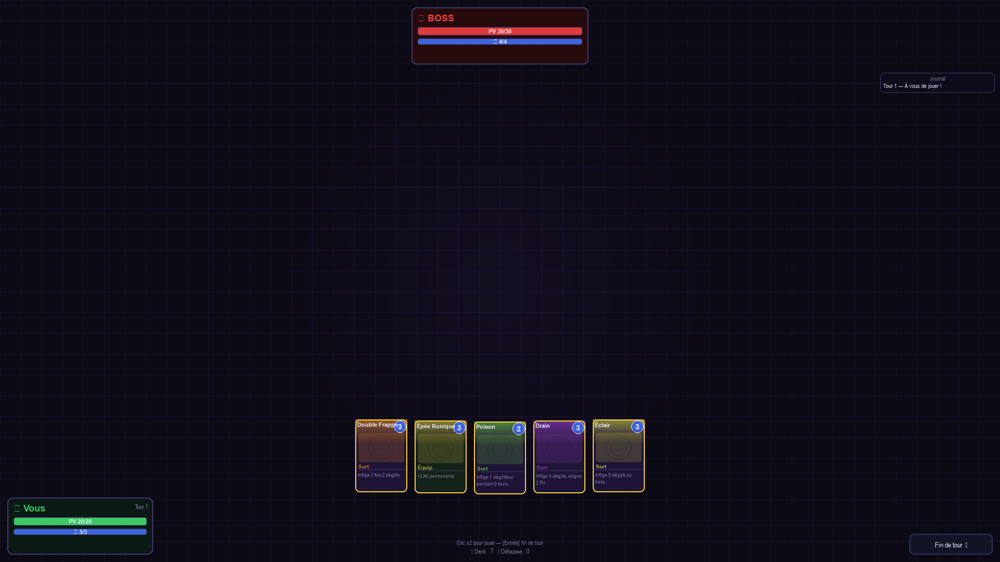

Mole Tale
A top-down video game built from scratch in Python by a team of five, with A* pathfinding, a network mode, a procedurally generated map and card combat.
Un jeu vidéo en vue de dessus créé de zéro en Python par une équipe de cinq, avec pathfinding A*, mode réseau, carte générée procéduralement et combats aux cartes.
- ContextContexte
- Team project, first year at EPITAProjet d’équipe, première année à l’EPITA
- PeriodPériode
- October 2025 to May 2026 (8 months)Octobre 2025 à mai 2026 (8 mois)
- TeamÉquipe
- 5 people5 personnes
- My roleMon rôle
- Team lead, AI and procedural generationChef d’équipe, IA et génération procédurale
- SizeTaille
- About 13,000 lines of code, about 400 commitsEnviron 13 000 lignes de code, environ 400 commits
- Stack
- Python, PyGame, Perlin Numpy, TCP, Git
- CodeCode
- github.com/Materwan/Projet-J3D
What it doesCe que fait le jeu
- Enemies find and chase the player with the A* algorithm.Les ennemis trouvent et poursuivent le joueur grâce à l’algorithme A*.
- Two players can play together over the network.Deux joueurs peuvent jouer ensemble en réseau.
- The map is generated procedurally.La carte est générée procéduralement.
- Fights are played with cards, and merchants sell items.Les combats se jouent aux cartes, et des marchands vendent des objets.



My roleMon rôle
I led the team: planning, splitting the work and coordinating five people over eight months. On the technical side I wrote the enemy AI and the procedural generation of the map.
J’ai dirigé l’équipe : planning, répartition du travail et coordination de cinq personnes pendant huit mois. Côté technique, j’ai écrit l’IA des ennemis et la génération procédurale de la carte.
ChallengesDifficultés
- Procedural generation.Génération procédurale. The terrain is built from Perlin noise, using the Perlin Numpy library.Le terrain est construit à partir de bruit de Perlin, avec la bibliothèque Perlin Numpy.
- Pathfinding. Enemies use the A* algorithm.Les ennemis utilisent l’algorithme A*.
- Network mode.Mode réseau. It relies on the TCP protocol, asynchronous code and threads.Il repose sur le protocole TCP, du code asynchrone et des threads.
What I would do differentlyCe que je ferais autrement
- Scale back the ambitions. Procedural generation was more than the available time allowed, and I would rather deliver a smaller game that feels finished.Revoir mes ambitions à la baisse. La génération procédurale dépassait le temps disponible, et je préfère livrer un jeu plus petit mais abouti.
- Rebuild the card game, which I rushed at the end.Refaire le jeu de cartes, que j’ai fait dans la précipitation à la fin.
- Estimate each task better, and how much time students really have for a project.Mieux estimer chaque tâche, ainsi que le temps réel que des étudiants peuvent consacrer à un projet.
Skills usedCompétences mobilisées
Python, PyGame, Git, team and schedule managementgestion d’équipe et de planning.